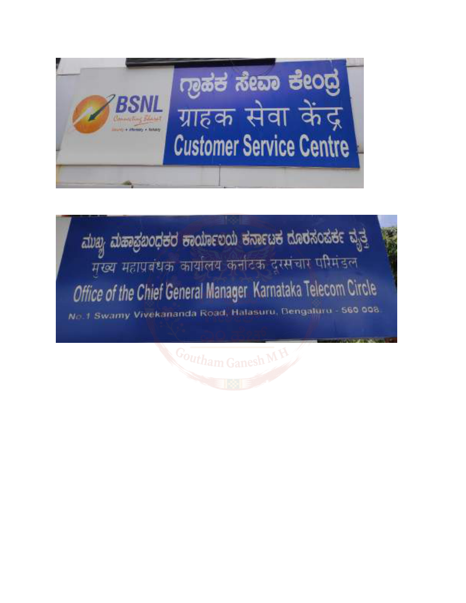
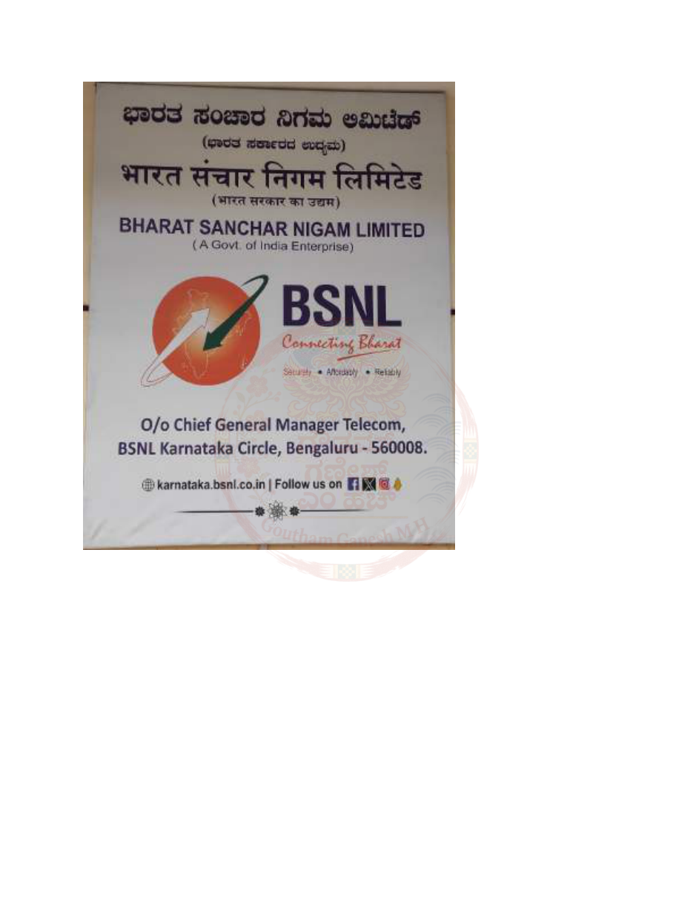
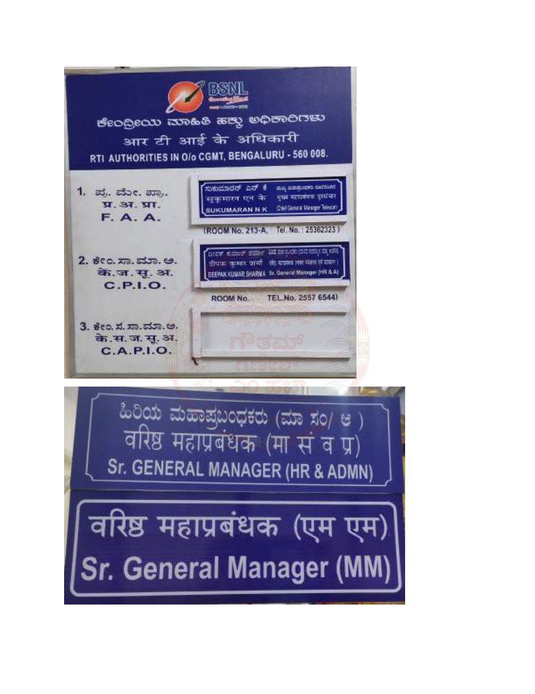
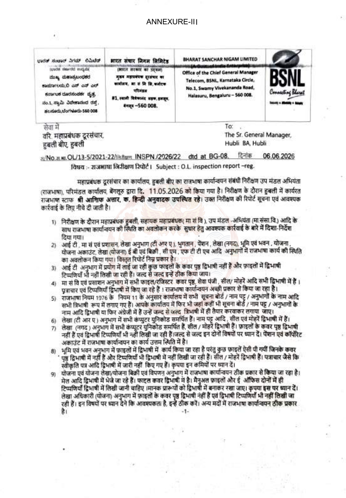
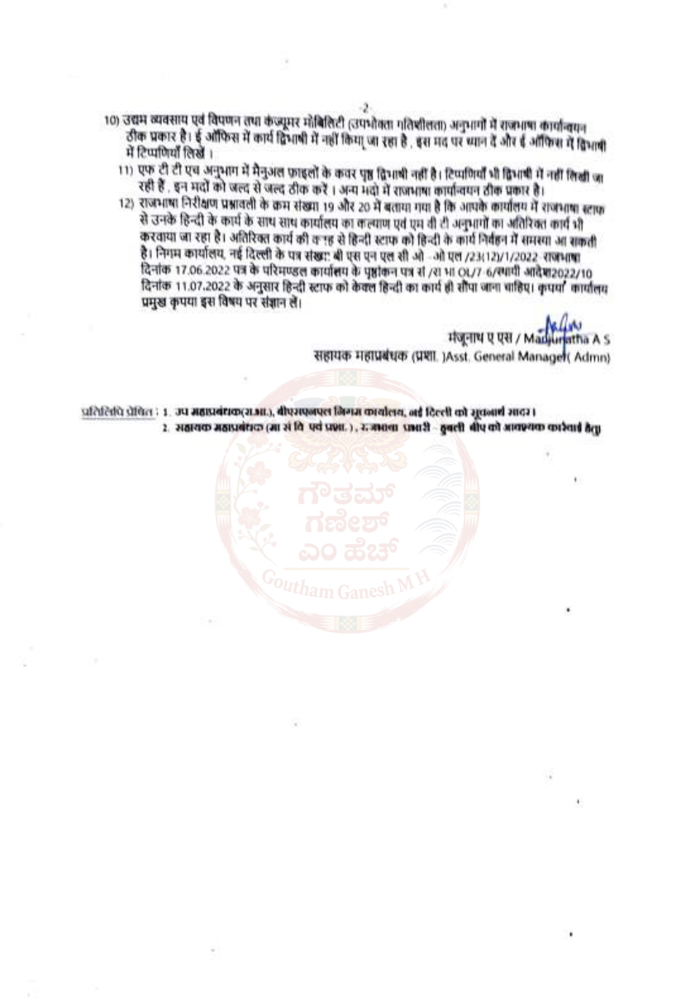
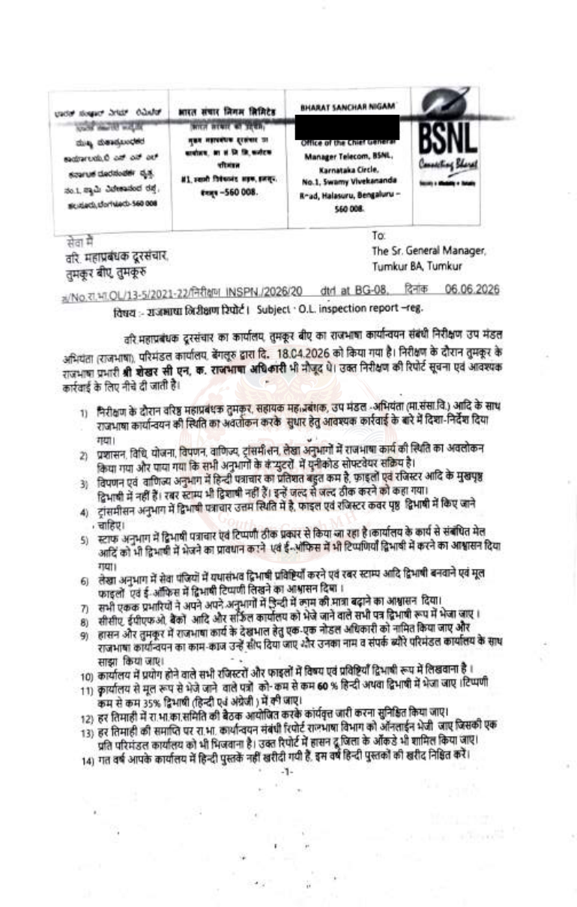
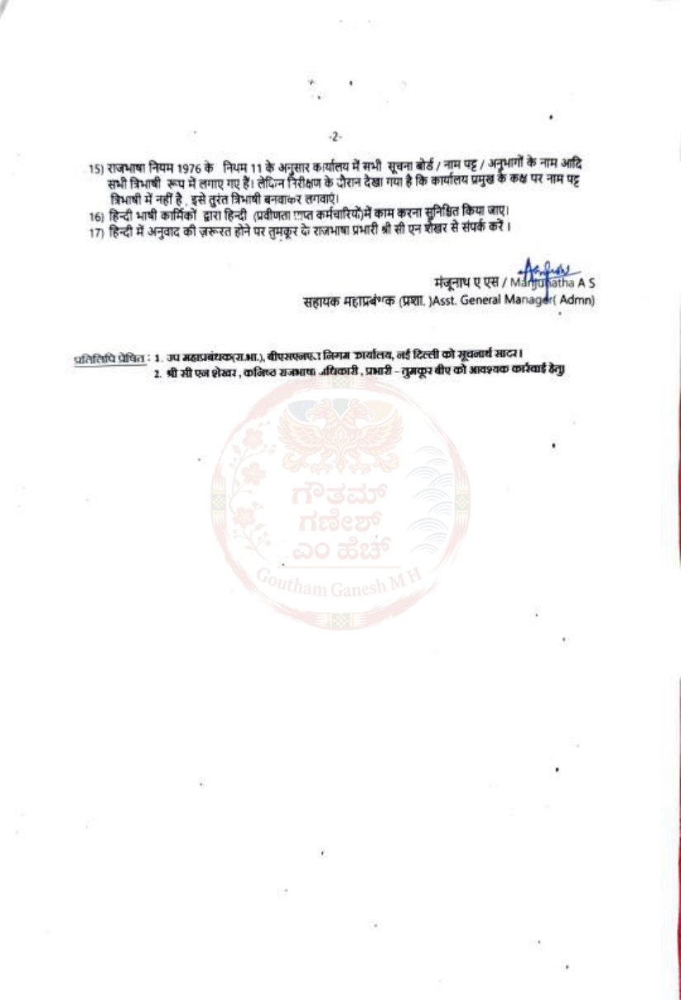
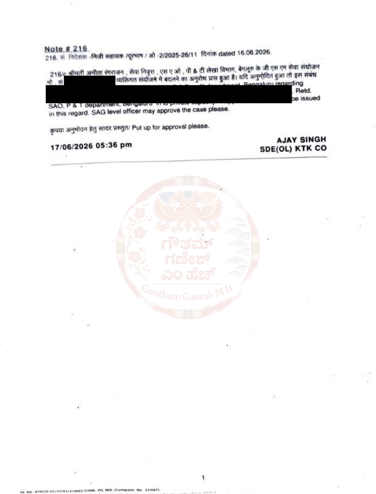
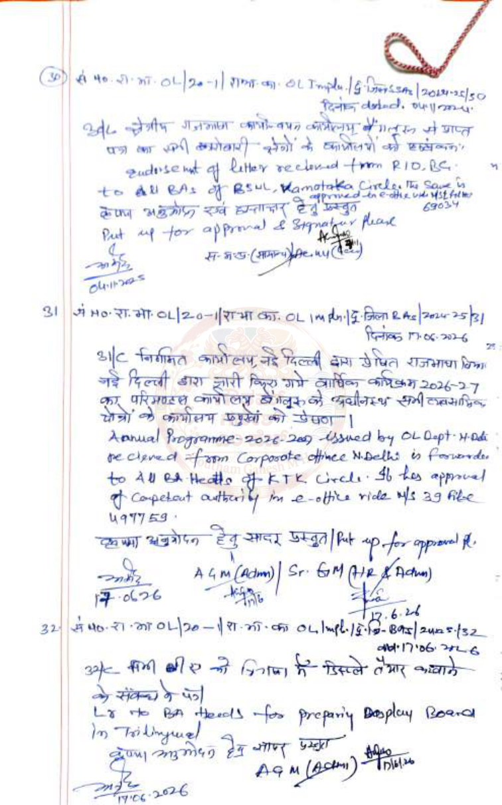
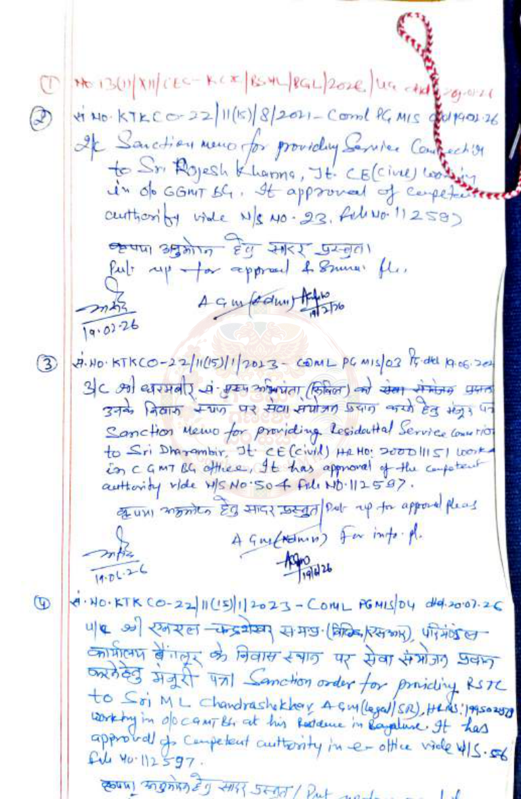

BSNL Karnataka Circle sends circulars, board photos and three inspection reports; its letter ordering trilingual boards is dated 17.06.2026
A 23-page reply: the CPIO's letter and four annexures. Three official-language circulars, photographs of boards at the Circle Office, Hindi inspection reports on the Hubli, Bengaluru and Tumkur business areas, file notings and a letter of 17.06.2026.

BSNKN/R/E/26/00071What was asked, and what came back
| 1Circulars issued under the OM | Annexure I: the Annual Programme 2023-24 circular of 01.07.2023, and two circulars of 17.06.2026 (check points on OL Rules; Annual Programme 2026-27). All three include a point that name plates and boards be trilingual |
|---|---|
| 2Action taken to use Kannada | Annexure II: photographs of the Circle Office room directory, customer service centre sign, office boards, the RTI authorities board and two nameplates |
| 3Inspection / compliance reports | Annexure III: official-language inspection reports on the Hubli (11.05.2026), Bengaluru (24.04.2026) and Tumkur (18.04.2026) business areas, all issued on 06.06.2026, in Hindi |
| 4Corrective action on non-compliance | Annexure IV: file notings and a letter of 17.06.2026: “all display boards, name plates, hoardings, notice boards, etc., used for public interface must be in trilingual (Kannada, Hindi, and English)” |
| 5Officer responsible for monitoring | “Sr.GM(HR/Admin) /Chief official Language Officer, O/o C G M Telecom BSNL ,Karntaka Circle ,Halsuru Bangalore -08” |
Why it matters
None of the enclosed circulars cites the OM of 21.06.2022; the oldest is the annual-programme circular of 01.07.2023 and the others are dated 17.06.2026. The inspection reports mainly check the use of Hindi; on boards, they record that the nameplate on the office head's room at Tumkur is not trilingual and tell Hubli to replace bilingual or English boards with trilingual ones. Most boards in the photographs have Kannada first, but the nameplate of the Sr. General Manager (MM) is in Hindi and English only. Several notings in Annexure IV concern staff telephone and FTTH connections, not boards. The letter says the application was transferred to the other business areas.
Machine translation by Google Translate, provided only to help readers. It may contain errors. Only the original Hindi document is authoritative.






To, Senior General Manager Telecom, Hubli BA, Hubli
No. OL/13-5/2021-22/Inspection INSPN./2026/22 Dated 06.06.2026
Subject:- Official Language Inspection Report.
Office of the General Manager Telecom, Hubli BA has been inspected regarding implementation of official language by Sub Divisional Engineer (Official Language), Circle Office, Bengaluru on 11.05.2026. Official language staff working in Hubli Mr. Asif Attar, Junior Hindi Translator were present during the inspection. The report of the said inspection is given below for information and necessary action.
1) During the inspection, the status of implementation of the official language was observed with General Manager Hubli, Assistant General Manager (Human Resource Development), Sub Divisional Engineer (Human Resource Development) etc. and directions were given regarding necessary action for improvement.
2) The status of official language work in the sections like IT, Human Resources and Administration, Accounts Section (TRA), Payment, Pension, Accounts (Cash), Land and Building, Planning, Plan Account, Accounts (Planning), EB and Sales, CM, FTTH etc. was observed. The detailed report is as follows.
3) The cover pages of some of the files being used in the IT section are not bilingual and bilingual notes are also not being written in the files. These should be rectified as soon as possible.
4) All file/register cover pages, service registers, seals/stamps etc. in the Human Resource Development and Administration Section are all in bilingual. Correspondence and comments are being made bilingually. Official language implementation is being done well.
5) According to Rule 11 of the Official Language Rules 1976, all the information boards/name plates/names of sections etc. in the office have been installed in trilingual form. Still, wherever in your office the information boards/name plates/names of sections etc. are bilingual or in English, they should be prepared and installed in trilingual form as soon as possible.
6) All Computers in Accounts (TRA) section are Unicode supported. Name plates, seals and stamps are bilingual.
7) All computers in Accounts (Cash) section are Unicode supported, seals/stamps are bilingual. The cover pages of the files are not bilingual and bilingual comments are also not being written. Focus on both these topics as soon as possible. The work of implementation of official language in pension and corporate accounts is in good condition.
8) Work is being done in bilingual in the files in Land and Building Section but some files were found whose cover pages are not in bilingual and notes are also not being written in bilingual. Seals/stamps are bilingual. Correspondence such as acceptance letters etc. have not been issued in bilingual. Please pay attention to these shortcomings.
9) Official language implementation is being done properly in the Planning and Planning Accounts/Planning Sales and Marketing section. Mails etc. are being sent in bilingual. The file cover is in bilingual. Notes should be written in bilingual both in manual files and e-Office. Standard formats should be maintained in bilingual form. Please pay attention to this. The cover pages of the files in the Accounts Officer (Planning) section are not bilingual and bilingual notes are also not being written. These issues need attention, fix them. Official language implementation in other items is fine.

10) Official language implementation in Enterprise Business and Marketing and Consumer Mobility sections is good. Work in e-Office is not being done in bilingual, please note this item and write comments in bilingual in e-Office.
11) Cover pages of manual files in FTTH section are not bilingual. Comments are also not being written in bilingual, fix these items asap. Official language implementation in other items is fine.
12) It has been mentioned in Serial No. 19 and 20 of the Official Language Inspection Questionnaire that in your office, along with their Hindi work, additional work of the welfare and MVT sections of the office is also being done by the official language staff. Due to extra work, Hindi staff may face problems in discharging their Hindi work. According to the circular office's endorsement letter no. BSNLCO-OL/23(12)/1/2022-Official Language dated 17.06.2022 of the Corporation Office, New Delhi, letter no.BSNLCO-OL/7-6/Standing Order 2022/10 dated 11.07.2022, only Hindi work should be assigned to the Hindi staff. Please head of office please take cognizance of this matter.
Manjunath A S Assistant General Manager (Administration)
Copy sent to: 1. Deputy General Manager (Official Language), BSNL Corporation Office, New Delhi for information. 2. Assistant General Manager (Human Resource Development and Administration), Official Language Incharge – Hubli BA for necessary action.

To, Principal General Manager Telecom, Bengaluru BA, Bengaluru
No. OL/13-5/2021-22/Inspection INSPN./2026/21 Dated 06.06.2026
Subject:- Official Language Inspection Report.
Office of the Principal General Manager Telecom, Bengaluru BA has been inspected regarding implementation of Official Language by the Sub Divisional Engineer (Official Language), Circle Office, Bengaluru on 24.04.2026. The report of the said inspection is given below for information and necessary action.
1) During the inspection, the General Manager (Human Resource Development), Assistant General Manager (Human Resource Development), Sub Divisional Engineer (Human Resource Development) and Junior Official Language Officer etc. observed the status of official language implementation and gave directions regarding necessary action for improvement.
2) The status of official language work in Administration, Planning, Marketing, Commerce, Legal, Accounts sections was observed and it was found that Unicode software is active in the computers of all sections.
3) During Official Language Inspection, it was found that cover pages of some files in Human Resource Development Section like – Time Bound Promotion (TBP), Non-Executive Promotion Policy (NEPP), Union etc. files are written only in English and comments in these files are also being written in English only. The cover page of all manual files available in the office should be written in bilingual and notes should also be written in bilingual.
4) According to Rule 11 of the Official Language Rules 1976, all the information boards/name plates/names of sections etc. in the office have been installed in trilingual form. In future too, these should be prepared in trilingual language only.
5) Correspondence in the files of Welfare, Motor Vehicles and Land and Building Section is being done in English only. Correct this and try to correspond bilingually.
6) It was found in the Main Accounts section that comments in the files were not being written in bilingual. More than 35% of comments in all files should be bilingual or in Hindi. Orders should be given by the administrative section to write bilingual notes in the files.
7) Comments in e-Office in the Operation and Planning section are being written in English only. Efforts should be made to write comments bilingually.
8) All letters sent to CCA, EPFO, banks and central government offices and circle offices should be sent in bilingual form.
9) In all the registers and files being used in the office, the subject matter is to be written in bilingual form and entries should be made in bilingual form as far as possible.
10) At least 60% of the letters sent originally from the office should be sent in Hindi. At least 35% of the comments should be made in bilingual (Hindi and English).
11) It should be ensured that a meeting of the Official Language Implementation Committee is organized every quarter and the minutes are issued.
12) At the end of every quarter, reports regarding the implementation of the official language should be sent online to the Department of Official Language, a copy of which should also be sent to the circle office. Statistics of Hassan Telecom District should also be included in the said report.

13) Ensure purchase of Hindi books as per the budget allotted for your office this year.
14) It should be ensured that work is done in Hindi by Hindi speaking personnel (proficient employees).
15) If there is a need for translation in Hindi in office work, help can be taken from Junior Official Language Officer Shri CN Shekhar.
16) It has been mentioned in Serial No. 19 and 20 of the Official Language Inspection Questionnaire that in your office, the Official Language staff is being made to do their Hindi work along with additional work of the welfare and MVT sections of the office. Due to extra work, Hindi staff may face problems in discharging their Hindi work. According to the circular office's endorsement letter no. BSNLCO-OL/23(12)/1/2022-Official Language dated 17.06.2022 of the Corporation Office, New Delhi, letter no.BSNLCO-OL/7-6/Standing Order 2022/10 dated 11.07.2022, only Hindi work should be assigned to the Hindi staff. Head of Office please take cognizance of this matter.
Manjunath A S Assistant General Manager (Administration)
Copy sent to: 1. Deputy General Manager (Official Language), BSNL Corporation Office, New Delhi for information. 2. Shri C N Shekhar, Junior Official Language Officer - Hubli BA for necessary action.

To, Senior General Manager Telecom, Tumkur BA, Tumkur
No. Official Language OL/13-5/2021-22/Inspection INSPN./2026/20 Dated 06.06.2026
Subject:- Official Language Inspection Report.
Office of the Senior General Manager Telecommunication, Tumkur BA has been inspected regarding implementation of Official Language by Sub Divisional Engineer (Official Language), Circle Office, Bengaluru on 18.04.2026. During the inspection, Official Language In-charge of Tumkur, Shri Shekhar C N, Junior Official Language Officer was also present. The report of the said inspection is given below for information and necessary action.
1) During the inspection, after observing the status of official language implementation along with Senior General Manager Tumkur, Assistant General Manager, Sub Divisional Engineer (Human Resource Development) etc., directions were given regarding necessary action for improvement.
2) The status of official language work in Administration, Law, Planning, Marketing, Commerce, Transmission, Accounts sections was observed and it was found that Unicode software is active in the computers of all sections.
3) The percentage of Hindi correspondence in the marketing and commerce section is very low, the front pages of files and registers etc. are not in bilingual. Even rubber stamps are not bilingual. These were asked to be rectified as soon as possible.
4) Bilingual correspondence in the transmission section is in good condition, file and register cover pages should be made in bilingual.
5) Bilingual correspondence and notes are being done properly in the staff section. It was assured to make provisions for sending mails etc. related to office work in bilingual and to make comments in e-office also in bilingual.
6) Gave assurance of making as many bilingual entries as possible in the service registers in the accounts section, getting rubber stamps etc. made bilingual and writing bilingual notes in the original files and e-office.
7) All unit in-charges assured to increase the amount of work in Hindi in their respective sections.
8) All letters sent to CCA, EPFO, banks etc. and circle office should be sent in bilingual form.
9) One nodal officer each should be nominated to look after the official language work in Hassan and Tumkur and the work of official language implementation should be handed over to them and their name and contact details should be shared with the circle office.
10) The subjects and entries in all the registers and files used in the office are to be written in bilingual form.
11) At least 60% of the letters sent originally from the office should be sent in Hindi or bilingual. At least 35% of the comments should be made in bilingual (Hindi and English).
12) It should be ensured that a meeting of the Official Language Implementation Committee is organized every quarter and the minutes are issued.
13) At the end of every quarter, the report regarding the implementation of the official language should be sent online to the Department of Official Language, a copy of which should also be sent to the circle office. Statistics of Hassan Telecom District should also be included in the said report.
14) Hindi books were not purchased in your office last year, ensure purchase of Hindi books this year.

15) According to Rule 11 of the Official Language Rules 1976, all the information boards / name plates / names of sections etc. in the office have been installed in trilingual form. But during inspection it was observed that the name board on the office head's room is not in trilingual, it should be made trilingual and installed immediately.
16) It should be ensured that Hindi speaking personnel work in Hindi (proficient employees).
17) In case of need of translation in Hindi, contact Mr. CN Shekhar, Official Language Incharge of Tumkur.
Manjunath A S Assistant General Manager (Administration)
Copy sent to: 1. Deputy General Manager (Official Language), BSNL Corporation Office, New Delhi for information. 2. Shri C N Shekhar, Junior Official Language Officer, Incharge – Tumkur BA for necessary action.




